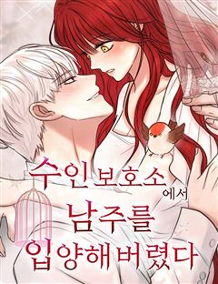
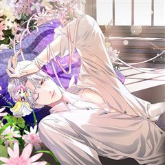
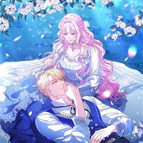
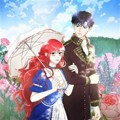
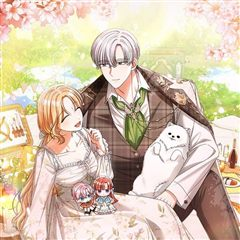
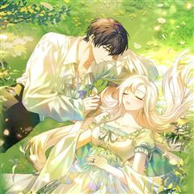
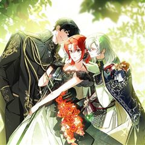
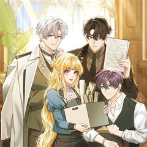

신데렐라를 곱게 키웠습니다 같은 웹툰 추천

신데렐라를 곱게 키웠습니다 · 선셋 / 키아르네
신데렐라를 곱게 키웠습니다 재밌게 봤다면 이 웹툰들도 좋아할 거예요. 같은 장르이면서 공감, 빙의, 힐링 같은 요소가 겹치는 작품을, 겹치는 요소가 많은 순서로 20개 골랐어요.
2026-10-07 기준 · 네이버웹툰·카카오웹툰·레진코믹스 · 성인 작품 제외
내 취향으로 직접 골라 추천받기 →-
1
 카카오웹툰
카카오웹툰대공가에 입양된 성녀님
“그만하고 싶어. 더는… 이용당하면서 살고 싶지 않아.” 성녀의 힘을 가졌음에도 내정된 가짜 성녀를 위해 평생을 감금당한 채 살아야 했다. 괴로움을 견디지 못해 죽고 나면 되돌아왔고, 강제로 반복되는 회귀 끝에 다른 방법을 택한 다이나는 우연히 대공…
공감힐링로판로맨스카카오웹툰에서 보기 → · 대공가에 입양된 성녀님 같은 웹툰 → -
2네이버웹툰
피폐물을 힐링물로 만드는 방법
[살아생전 즐겨보던 소설에 환생했다.] 너무 진부하다구요? 아닐 걸요! 왜냐면 그 소설이... 19금 피폐물이거든요...! ̗̀(ꀬ⏖ꀬ∴) 예쁘고 상냥한 여주인공의 동생으로 환생했지만, 언니의 새드엔딩을 지켜볼 수 없었던 레나티스는 언니 대신 잘생긴…
빙의힐링로판로맨스네이버웹툰에서 보기 → -
3

네이버웹툰수인 보호소에서 남주를 입양해 버렸다
피폐삽질 소설의 시에나 로베트라는 악녀에 빙의했다. 돌연변이라는 이유로 표범 가문에서 버려져 수인 보호소에 온 남주를 괴롭히다, 뒤늦게 아들을 찾아온 공작에 의해 단명하는 역. 어떻게든 살아보겠다고 팔불출 아빠를 설득해서 공작이 오기 전까지 이반을…
빙의힐링로판로맨스네이버웹툰에서 보기 → -
4

카카오웹툰시한부 흑막이 내 파혼을 후원한다
교통사고로 죽은 후, 19금 피폐 로맨스 소설 속 악녀 '다프네'에 빙의했다. "빙의를 해도 하필 얘라니, 이번 생도 꿀 빨긴 글렀구나…." 그런데 이 삶, 생각보다 달콤하고 즐거운걸?! 지난 생에 먹고살려고 터득한 약초 지식 덕에 대박 사업 아이템…
빙의힐링로판로맨스카카오웹툰에서 보기 → -
5

카카오웹툰육아물 엄마는 꼭 죽어야 하나요?
"육아물 주인공이 아니라 주인공을 낳다가 죽는 엄마로 빙의했다고?" 제국의 볼모로 끌려가게 생긴 그 순간 모든 것이 떠올랐다! 여기는 <핑발 황녀는 버림받지 않는다>라는 소설 속이고 나는 주인공을 낳다가 그대로 죽게 되는 엄마에 빙의했다는걸! "이대…
빙의힐링로판로맨스카카오웹툰에서 보기 → -
6

카카오웹툰예쁜 애 옆에 예쁜 애
소설 ‘달의 소녀가 남겨준 사랑’ 속 악녀 로제타 클리프에 빙의한 홍장미. 그녀는 서브녀인 클라릿사를 학대하다 결국 클라리사의 오빠인 테런에게 죽음을 맞이하는 운명을 가지게 된다. 구 홍장미, 현 로제타는 자신의 예정된 죽음을 벗어나기 위해 인생을…
빙의힐링로판로맨스카카오웹툰에서 보기 → -
7

카카오웹툰세상에 나쁜 금쪽이는 없다
<스킬 [금쪽이 상태 알림창]을 획득했습니다! 당신의 도움이 필요한 아이의 상태를 보다 정확하게 파악할 수 있습니다.> * 에디스 이레네 브뤼셀에게는 한 가지 비밀이 있었다. 그녀가 바로 빙의를 경험했다는 사실이다. 그녀는 어느 날 갑자기 에디스가…
빙의힐링로판로맨스카카오웹툰에서 보기 → -
8네이버웹툰
같이 장볼래?
유통기한 임박 상품만 노리는 생활력 만렙 자취러 ‘양은’과, 모든 삶을 효율로 계산하는 미니멀리스트 ‘우석’. 1+1 딸기를 나눠산 그 날부터, 두 사람의 썸… 아니, 장보기가 시작된다!
공감힐링로맨스네이버웹툰에서 보기 → -
9카카오웹툰
취준끝에 재벌2세
취직을 위해 악착같이 노력했지만, 현실은 빽도 운도 없는 가난한 취준생. 영양실조로 쓰러지는 순간까지 돈 걱정. 깨어나니 대한민국 최고 재벌가의 딸이자, 평판이 땅에 떨어진 프로 갑질러 싸이코 악녀 최시아의 몸에 빙의해버렸다! 그저 달콤한 꿈인 줄…
공감빙의로맨스카카오웹툰에서 보기 → -
10
 카카오웹툰
카카오웹툰여보, 나 파업할게요
2회차 결혼 생활, 돌연 파업 선언?! 결혼 생활 10년 동안 무뚝뚝하고 전쟁밖에 모르던 남편 제스터 옆에서 고생만 하다 불치병으로 죽은 카시아. 하지만 눈을 떠보니 10년 전 결혼 후 첫 날로 돌아와 있었다. 어차피 불치병으로 죽을 몸, 카시아는…
공감로판로맨스카카오웹툰에서 보기 → · 여보, 나 파업할게요 같은 웹툰 → -
11카카오웹툰
일코하는 황녀님
최애가 살아 숨 쉬는 소설로 환생했다. 각종 수식어로 불리는 제국의 황녀, 아그네스 세인트로! 일단 돈 많은 황족인 건 좋은데... 최애의 인격을 모독하던 혐성 쓰레기가 바로 '나'라는 게 문제였다. 그래도 이왕 이렇게 된 이상... 기필코, 반드시…
공감로판로맨스카카오웹툰에서 보기 → -
12

카카오웹툰쉬고 싶은 레이디
왕, 마법사, 악사, 검사, 부호, 거지, 성녀, 마녀... 수없이 전생을 거듭하며 그녀는 천년을 살았다. 때론 세상에서 가장 존귀한 자로, 때론 가장 비천한 자로. 그중에서도 53번째 삶은 손꼽힐 정도로 처참하고 괴로웠다. 그리고 다시 시작된 54…
공감로판로맨스카카오웹툰에서 보기 → -
13카카오웹툰
K-유교 어린이가 악당 가족을 구함
어느날 과식으로 앓아누웠다가 눈을 떴을 뿐인데. 정의로운 K-어린이(태권도 품띠)였던 전생을 깨달았다? ‘심지어 내가 세상을 구해야 한다고?!’ 충분히 할 수 있지! 시작은 막돼먹은 어린이들부터! “친구한테 그러케 나쁘게 말하면 안 댐니다…
공감로판로맨스카카오웹툰에서 보기 → -
14카카오웹툰
이혼 전략
어느 날, 친자매 같은 친구가 내 남편의 아이를 가졌다고 고백했다. "축하해 줘, 아리아나." 미안해하기는커녕 당당하게 축복을 바라는 친구. "헛소리하지 마. 이혼이 가능할 것 같아?" 데릴사위로 들어와 백작이 됐음에도 뻔뻔한 남편. 가문의 빚을 해…
공감로판로맨스카카오웹툰에서 보기 → -
15

카카오웹툰장녀는 꽃길을 걷는다
아들을 원했던 부모에게 장녀란 쓸모 있지도, 사랑스럽지도 않은 존재였다. 틸로드 가문의 장녀로 태어나 언제나 희생을 강요당한 라디스. 그러나 온몸이 부서지도록 노력한 끝에 돌아온 것은 결국 가족들의 배신이었다. “다 헛된 꿈이었어. 부모님을 위해,…
공감로판로맨스카카오웹툰에서 보기 → -
16

카카오웹툰퇴사 후 남주들의 집착은 사절이에요
전생에 K 직장인이었던 여주. 이번 생에 꿀부서에 발령 받아 월급 루팡을 희망하지만… 경력직 신입은 바로 이런 것이다?! 능력이 너무 넘쳐서 일 많고 위험한 워라밸 최악의 부서로 끌려가게 되는데. "로웰, 넌 정말 최고의 인재야. 넌 세상에서 제일…
공감로판로맨스카카오웹툰에서 보기 → -
17
 카카오웹툰
카카오웹툰남편을 내 편으로 만드는 방법
판타지 소설 속 남편의 손에 죽는 악역 조연, ‘루드베키아’가 되었다. 이 세계의 망할 아버지는 내 정략결혼 상대를 또 물어왔다. 문제는 그 상대가 바로 날 죽이게 될 남편이라는 것! 일단은 살길을 찾아야 한다. 북부 사람들에게 최대한 무해하게 보이…
빙의로판로맨스카카오웹툰에서 보기 → · 남편을 내 편으로 만드는 방법 같은 웹툰 → -
18
 카카오웹툰
카카오웹툰악역의 엔딩은 죽음뿐
역하렘 공략 게임의 악역, 에카르트 공작가의 하나뿐인 공녀이자 입양아 페넬로페로 빙의했다. 그런데 하필 난이도는 극악! 뭘 해도 엔딩은 죽음뿐! ‘진짜 공녀’가 나타나기 전에 여주의 어장 중 한 명을 공략해서 살아남아야 한다. 사사건건 시비를 거는…
빙의로판로맨스카카오웹툰에서 보기 → · 악역의 엔딩은 죽음뿐 같은 웹툰 → -
19
 카카오웹툰
카카오웹툰빙의자를 위한 특혜
※사후 세계를 대비하세요! 죽기 직전에 받은 이상한 스팸문자. 죽은 줄 알고 눈떠보니 빙의심사국이다. 정말 사후 세계가 있다고? 책 속으로 빙의될 거라고? "특별히 선호하는 장르가 있으신가요?" 전생에 덕질로 모든 장르를 섭렵한 나.…
빙의로판로맨스카카오웹툰에서 보기 → · 빙의자를 위한 특혜 같은 웹툰 → -
20
 카카오웹툰
카카오웹툰악녀라서 편하고 좋은데요?
"악녀라서 뭐? 편하고 좋기만 한데?" 2020년 카카오페이지 올해의 웹소설 <악녀라서 편하고 좋은데요?> 웹툰으로 화려하게 다시 태어나다! 은수저X, 금수저X :+: 오리하르콘 수저 :+: 악녀로 빙의한 윤도희 180,000,000도 인생 역전에…
빙의로판로맨스카카오웹툰에서 보기 → · 악녀라서 편하고 좋은데요? 같은 웹툰 →